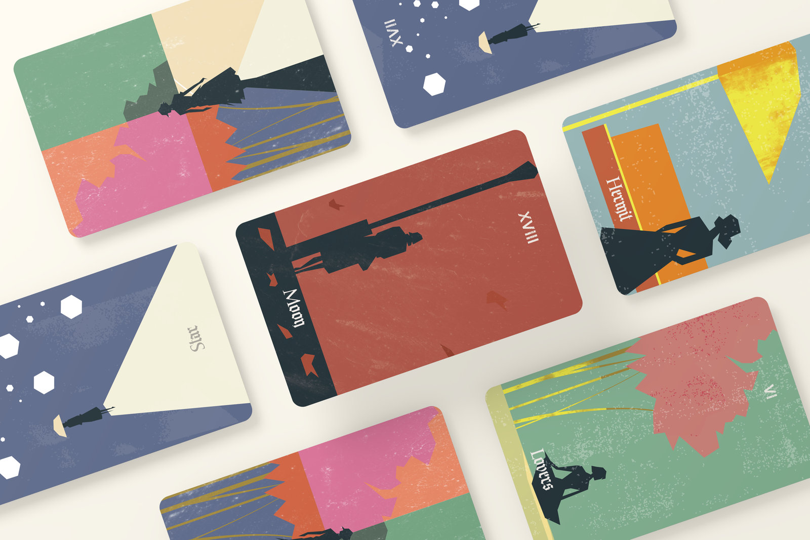
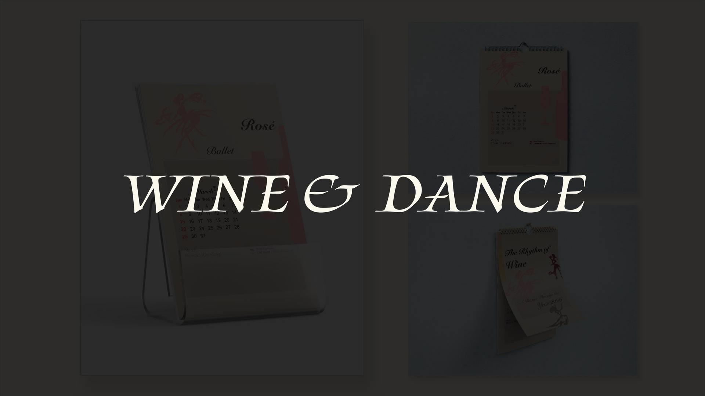
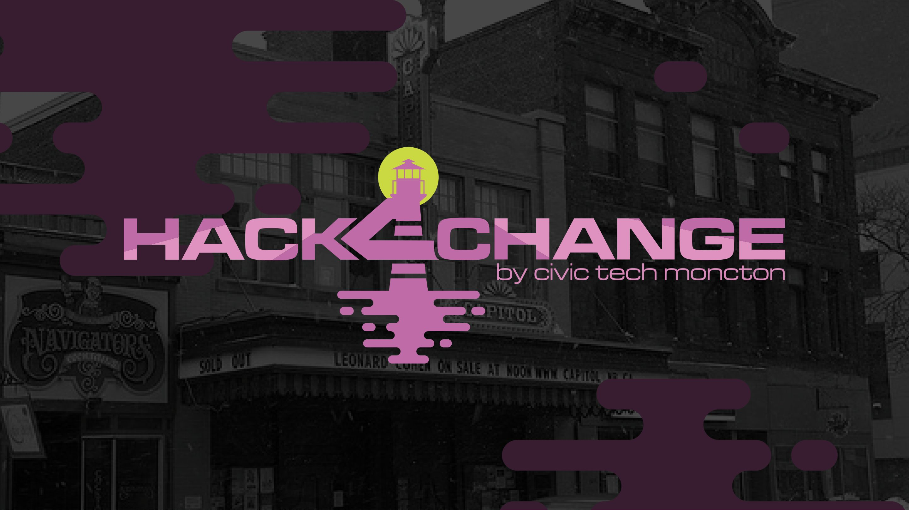

Ashton isisa graphic designer.a graphic designer, an illustrator, a photographer, a UI designer, a concept artist, a digital painter, a character designer, a community manager, an AI architect and an AI evangelist, and was an electrical engineer.



Exploring how AI and human creativity can learn from each other.